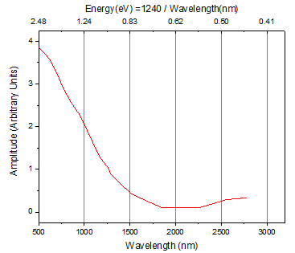
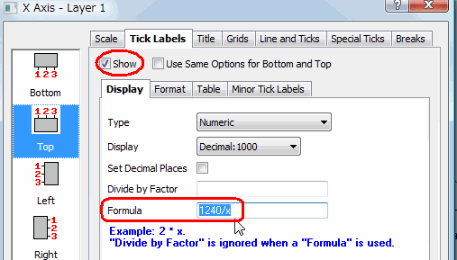
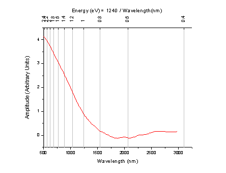
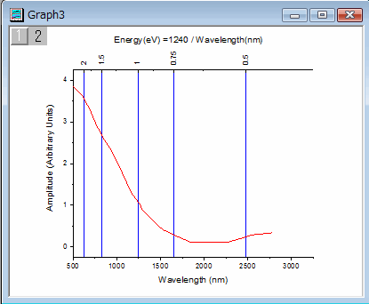

FAQ-112 Wie kann ich eine zweite nichtlineare X- oder Y-Achse zu meinem Diagrammlayer hinzufügen?
2nd-Nonlinear-Axis
Letztes Update: 06.01.2019
Gegenüberliegende Achsen im gleichen Layer
Beachten Sie, dass jeder einzelne Layer aus vier Achsen besteht: Unten X, Oben X, Links Y und Rechts Y. Das Diagramm unten ist ein einzelner Layer, in dem sowohl die untere als auch die obere X-Achse angezeigt werden. Die untere X-Achse ist die Wellenlänge in Nanometern, wie in den Rohdaten vorhanden. Die obere X-Achse stellt Energie dar. Jede Hilfsstrichsbeschriftung auf der oberen Achse wird mit folgender Formal berechnet: Energie (ev) = 1240 / Wellenlänge (nm).

Im Folgenden finden Sie die Schritte:
- Klicken Sie doppelt auf die untere X-Achse, um den Dialog Achsen zu öffnen.
- Wechseln Sie zur Registerkarte Linie und Hilfsstriche. Wählen Sie Oben im linken Bedienfeld. Aktivieren Sie das Kontrollkästchen Linie und Hilfsstriche zeigen.
- Wechseln Sie bei Auswahl von Oben im linken Bedienfeld zur Registerkarte Beschriftung der Hilfsstriche. Aktivieren Sie das Kontrollkästchen Zeigen.
- Geben Sie auf der Registerkarte Anzeige 1240/x in das Feld Formel ein und klicken Sie auf die Schaltfläche OK.
- Wenn die Hilfsstrichsbeschriftungen nicht als schön abgerundete Zahlen angezeigt werden, können Sie den Dialog Achsen wieder öffnen und die Dezimalstellen oder Anzeige auf der Registerkarte Anzeige der Registerkarte Beschriftung der Hilfsstriche festlegen.

Hinweis: Vor Origin 2015 gab es keine Formel im Dialog Achsen. Sie müssen den Dialog Layer-Verwaltung folgendermaßen verwenden:
- Wählen Sie im Menü Grafik: Layerverwaltung.
- Erweitern Sie auf der Registerkarte Achsen die Zweige Oben oder Rechts und aktivieren Sie die Kontrollkästchen Achse und Hilfsstrichsbeschriftung.
- Geben Sie 1240/x im Feld Formel ein.
- Klicken Sie auf die Schaltfläche Anwenden unten auf der Registerkarte.
- Klicken Sie auf OK, um den Dialog zu schließen.
Hinweis: Im Dialog Layer-Verwaltung muss nach Vornehmen der Änderungen auf die Schaltfläche Anwenden geklickt werden. Ansonsten hat die Schaltfläche OK keine Wirkung.
Ein neuer Layer
In dem obenstehenden Beispiel verwenden die oberen X- und die unteren X-Achsen die gleichen Einstellungen. Nur Hilfsbeschriftungen für oben werden mit Hilfe der Formel berechnet. Wenn Sie die obere X-Achse unabhängig festlegen möchten, z.B. Skalierungstyp und Hilfsstrichspositionen (im Bild unten werden die Hilfsstriche beispielsweise auf einer reziproken Skalierung angezeigt), müssen Sie einen neuen verknüpften Layer hinzufügen, dessen obere Achse gezeigt wird.

Im Folgenden werden die Schritte aufgeführt.
- Wählen Sie im Menü Einfügen: Neuer Layer (Achsen): Obere X, um einen verknüpften neuen Layer mit angezeigter oberer X-Achse hinzuzufügen.
- Klicken Sie zum Öffnen des Dialogs Details Zeichnung doppelt auf das Diagramm.
- Wählen Sie den Zweig ObereX im linken Bedienfeld und gehen Sie zur Registerkarte Achsen verbinden.
- Wählen Sie die Option Benutzerdefiniert in der Gruppe Verbindung der X-Achsen und geben Sie die folgende Formel ein, um die Anfangs- und Endwerte der oberen X-Achse zu berechnen.
- Geben Sie neben X1 = ein: 1240/x1
- Geben Sie neben X2 = ein: 1240/x2
- Klicken Sie auf OK, um den Dialog zu schließen.
- Klicken Sie doppelt auf die obere X-Achse, um den Dialog Achsen zu öffnen.
- Wählen Sie auf der Registerkarte Skalierung die Option Reziprok im Feld Typ.
- Aktivieren Sie auf der Registerkarte Gitternetze das Kontrollkästchen Zeigen im Zweig Hauptgitternetzlinien.
- Gehen Sie auf der Registerkarte Beschriftung der Hilfsstriche zur Registerkarte Format und wählen SIe 90 in der Auswahlliste Drehen (Grad).
Hinweis: Wenn Sie den Skalierungsbereich ändern möchten, klicken Sie bitte doppelt auf die untere Achse, um die Werte für Von und Bis zu ändern. Der obere Achsenbereich wird entsprechend aktualisiert.
Position der Hilfsstriche aus einem Datensatz
Fahren Sie mit dem Abschnitt Ein neuer Layer fort. Sie können sogar kleine oder große Hilfsstriche bei festgelegten Stellen positionieren (daher auch das Gitternetz, falls eines vorhanden ist), wie im Bild unten zu sehen.

Im Folgenden finden Sie die Schritte:
- Klicken Sie doppelt auf die obere Achse, um den Dialog Achsen zu öffnen.
- Wählen Sie auf der Registerkarte Skalierung im Zweig Große Hilfsstriche die Option Nach benutzerdefinierten Positionen aus der Auswahlliste Typ.
- Geben Sie im Feld Position direkt 2 1,5 1 0,75 0,5 ein. Wählen Sie die Spalte in der Auswahlliste, wenn die Hilfsstrichspositionen in einer Spalte gespeichert werden.

Möglicherweise kann Ihnen auch diese Seite der Schnellhilfe helfen: Spezielle Hilfsstriche.
Schlüsselwörter: Verbindung, Formel, Gleichung, Frequenz, Wellenlänge, Energie, reziprok, nichtlinear, Skalierung